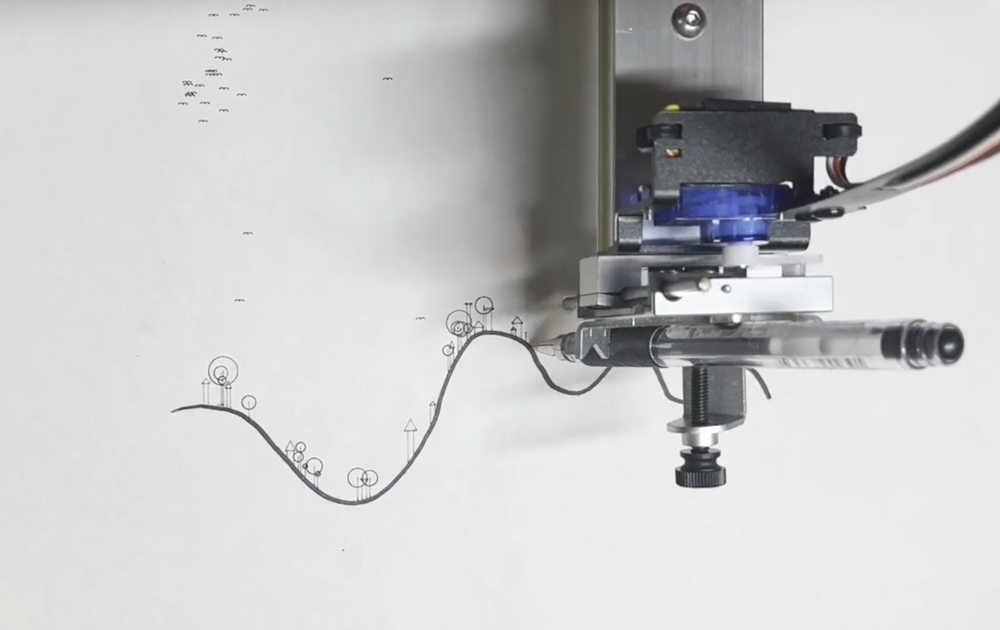

<div class="textcontainer">
<h3>About Me</h3>
<p class="margin"> </p>
<div class="center-row">
<p id="aboutme">
I am a creative technologist and new media artist currently based in Cambridge, Massachusettes. I am currently pursuing my Master’s Degree in Mediums Design Studies at the Harvard University Graduate School of Design. <br><br>
I believe that data invisible to our eyes underlie the world and through thoughtful measurement and beautiful representation we can bring these invisible patterns to light. My work focuses on building a relationship with these data.
</p>
</div>
<br></br>
<h4>Marc's Links!</h4>
<a href="https://marcdunand.com/">Main Site</a> |
<a href="https://github.com/MarcDunand">Github</a> |
<a href="http://www.linkedin.com/in/marc-dunand-cmu">LinkedIn</a><br>
<br>
<a href="https://marcdunand.com/portfolio/">

</a>
<br></br>
</div>